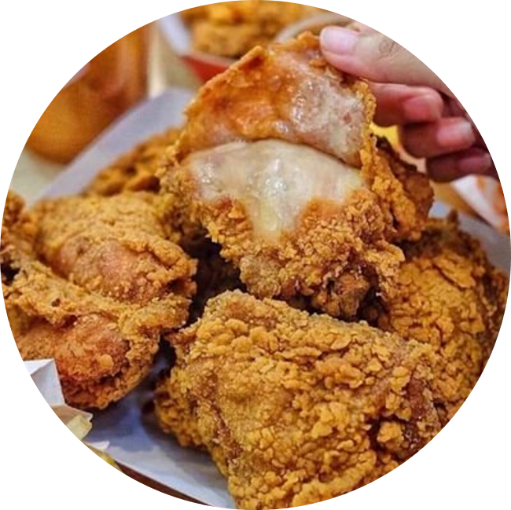

Vico Sotto @vicosotto · 10m
Happy Father's Day!


Deep Thoughts@quotetopo... · 1hr Sometimes it feels better not to talk.

Food Porn @Ohfoodsgram · 3hr Pizza pls? #Ohinstagram

Sana Minatozaki @shyshy... · 4hr
is sana gay?


tred of bng slf-awre@daza... · 5hr
ishigami yu's character development :O


NEONBALLSS@junkterrorbill · 10hr Duterte and DDS to the health crisis.